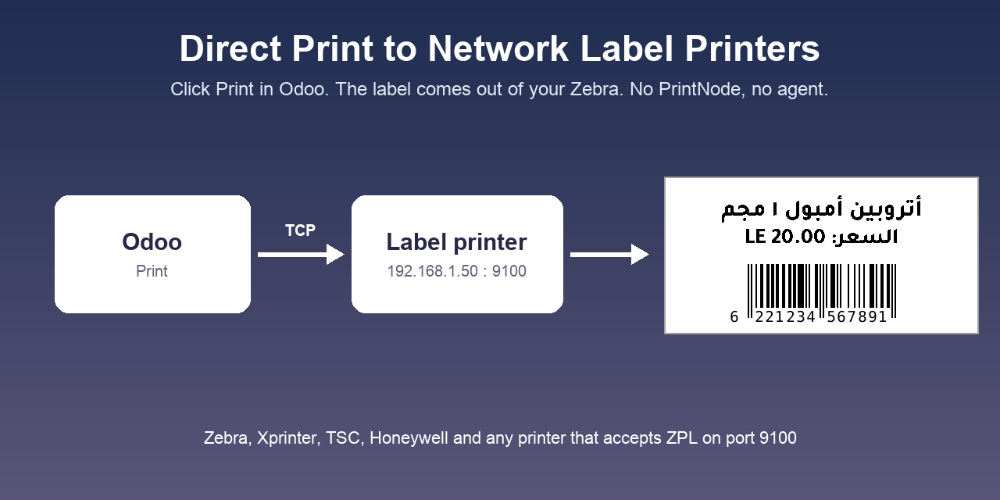
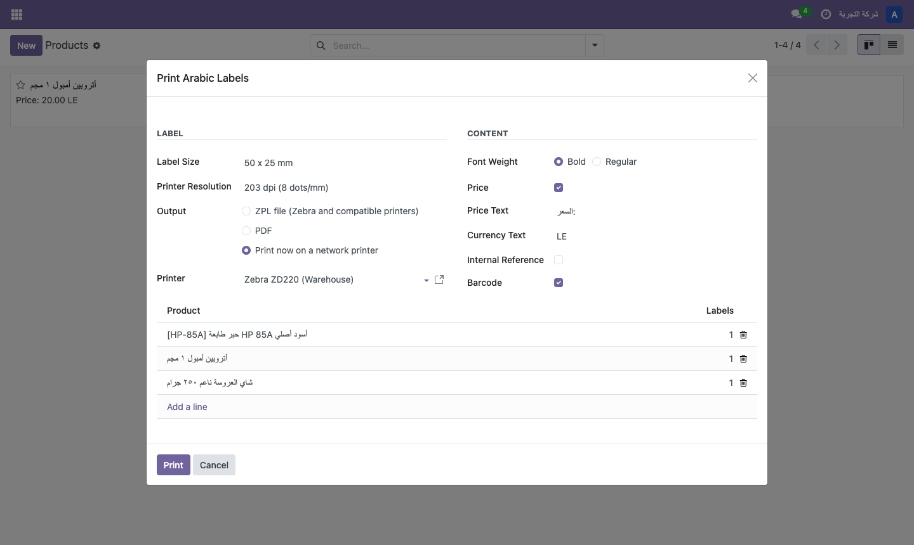
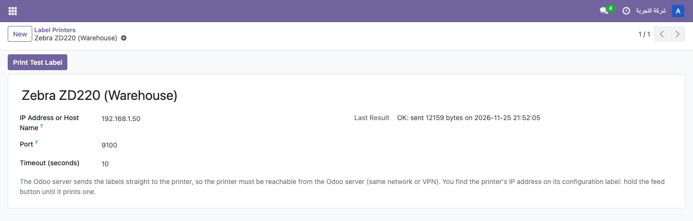
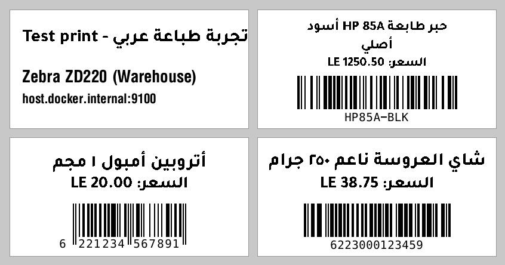

Click Print in Odoo and the labels come out of your label printer. Nothing to download.
The Odoo server sends the ZPL labels straight to the printer on its network port (9100). No PrintNode subscription, no agent or browser plugin to install.

In Print Arabic Labels, choose Print now on a network printer, pick the printer and click Print.
No PrintNode or cloud print service. The printer only needs an IP address on the same network as the Odoo server.
Printer off, wrong port, wrong address: Odoo tells you exactly what is wrong. Each printer shows its last result.


Settings > Technical > Label Printers. Print Test Label checks the connection and prints a label with Arabic text.
A test label and three product labels sent by the module, rendered exactly as a 203 dpi printer prints them.

Questions? Contact me through the Odoo Apps store page.